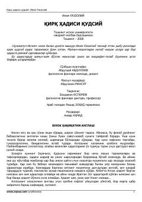

QHImom G‘azzoliy qalamiga mansub qirq qudsiy hadis to‘plami va uning sharhlari.
Ushbu risolada buyuk mutafakkir Imom G‘azzoliy tomonidan jamlangan va tarjima qilingan qirqta qudsiy hadis o‘rin olgan. Har bir hadisning мазмун-моҳияти очиб берилиб, ўқувчини маънавий poklanishga va Allohning kalomini anglashga chorlaydi.